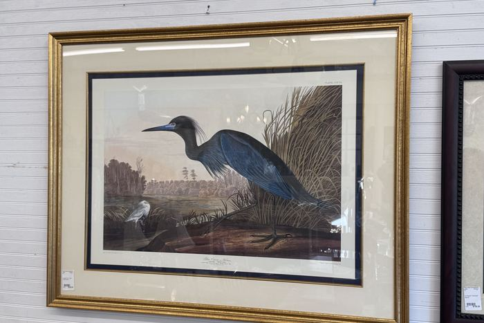
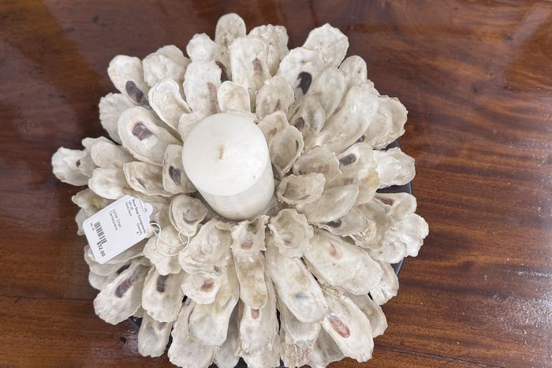

Walk into almost any decorated home this December and you'll notice a shift: fewer matching big-box ornament sets, more brass candlesticks, silver bowls full of magnolia, and mismatched antique glass catching the tree lights. Vintage Christmas decor is having a moment — and here in the South Carolina Lowcountry, where so many of us grew up with Grandmother's silver on the sideboard every December, it feels less like a trend and more like coming home.
The good news: you don't need to inherit it. Here's what to look for, where to find it near Holly Hill, Orangeburg, Santee, and Summerville, and how to put it together so it looks collected, not cluttered.
Why Vintage Holiday Decor Is Everywhere in 2026
- The "collected over time" look. The same nostalgic, layered style driving the grannycore trend translates perfectly to the holidays — warm, personal, a little imperfect.
- Quality you can feel. Real brass, sterling and silver plate, cut crystal, and heavy glass have a weight and glow that plastic decor can't fake.
- Price. A solid brass candelabra at a consignment shop often costs less than a new resin one at the mall.
- It lasts. Buy it once, use it every December, hand it down. That's the whole point.
What to Hunt For
Brass Candlesticks and Candelabras
Nothing says Southern Christmas like a cluster of brass candlesticks in different heights down the dining table or across the mantel. Mix finishes and styles freely — the variety is what makes it look intentional. A quick polish brings even tarnished pieces back to life.
Silver and Silver Plate
Silver trays, bowls, pitchers, and tea services are workhorses at the holidays. Fill a silver bowl with ornaments or citrus, use a pitcher as a vase for holly and magnolia, or set out a tray as a coffee and cocoa station. Lightly tarnished silver has a softer, older look many decorators actually prefer.
Vintage Glass and Crystal
Cut crystal, pressed glass, ruby and green glassware, and milk glass sparkle under candlelight and tree lights. Glass compotes and cake stands make instant risers for a dessert table, and a crystal punch bowl is a holiday-party classic for a reason.
Holiday China and Transferware
Red and green transferware, Christmas-pattern dinnerware, and classic white china with gold or silver rims set a festive table without trying too hard. Mixing patterns is not only allowed — it's the look. See our post on getting your home ready to host for more tablescape ideas.
Mirrors, Frames, and Art
An ornate gilt mirror over the mantel doubles every candle and light in the room. Swap in a vintage winter landscape or still life for the season, or hang a wreath directly on a framed mirror for a layered look.

Wood and Rustic Pieces
Dough bowls, wooden crates, old ladders, and vintage baskets work beautifully filled with greenery, pinecones, or wrapped gifts — and they fit right in with the farmhouse and Lowcountry cottage styles so common around here.
Statement Furniture for the Season
Hosting is easier with the right pieces: a sideboard or buffet for a holiday spread, a bar cart for eggnog and cider, a bench for the entryway when the whole family shows up with coats. Picking these up secondhand means they stay useful long after the decorations come down.

How to Style a Vintage Christmas (Without the Clutter)
Five Quick Styling Rules
- Pick a metal. Lead with brass or silver and let the other play a supporting role.
- Group in odd numbers. Three or five candlesticks of different heights look curated; two look like a set.
- Use real greenery. Magnolia, cedar, holly, and pine from the yard are free and pair perfectly with older pieces.
- Add one or two "wow" pieces. A big gilt mirror or a crystal punch bowl anchors everything else.
- Edit. Vintage looks best with breathing room. If a surface feels busy, take one thing away.
Where to Find Vintage Christmas Decor Near You
Estate sales are a classic source for holiday decor, but they're hit-or-miss and you have to be there early (our estate sale tips explain how to work one). Antique malls in Charleston and Summerville have deep selections at deeper prices. For most Lowcountry shoppers, a curated consignment shop is the sweet spot: someone has already sorted the good from the broken, and prices stay well below retail.
At Room Swap, estate inventory comes through the door all season long, so brass, silver, glass, mirrors, and furniture turn over constantly. If you want the best selection, come early in the season — late October through mid-November — before holiday shoppers clear the shelves. For more on the local scene, see our guide to antique stores near Holly Hill and the Lowcountry.
Room Swap Consignments is at 8531 Old State Road, Holly Hill, SC 29059. We're open Tuesday through Friday, 12–5 PM, and Saturday, 10 AM–5 PM. Holiday-week hours can shift, so check our Facebook page or call 843-900-1412 before you make the drive.
Have Holiday Decor You No Longer Use?
If you're downsizing or just have boxes of silver, crystal, or brass sitting in the attic, fall is the best time to sell or consign it — that's exactly when shoppers are looking for it. Text photos to 843-900-1412 for a quick evaluation.
Frequently Asked Questions
Where can I buy vintage Christmas decorations near Holly Hill, SC?
Room Swap Consignments in Holly Hill carries rotating estate inventory including brass candlesticks, silver and silver plate, vintage glass and crystal, mirrors, and furniture that work beautifully for holiday decorating.
When is the best time to shop for vintage holiday decor?
Late October through mid-November, before the holiday rush. One-of-a-kind pieces sell quickly once December arrives.
How do I clean tarnished brass or silver decor?
Use a non-abrasive polish made for the specific metal and a soft cloth. Many decorators leave a little patina on brass and silver for an older, softer look.
Can I consign my old holiday decor?
Yes. Quality silver, brass, crystal, and decorative pieces in good condition sell well in the fall. Text photos to 843-900-1412 for an evaluation.